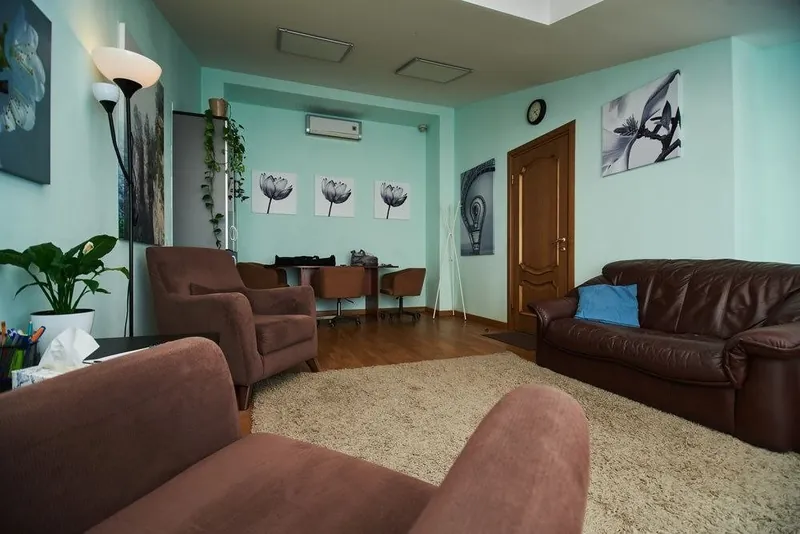

Онлайн в Яндекс Телемосте
Онлайн-встречи проходят с включенными камерой и микрофоном у обоих, клиенту необходимо организовать себе уединенное пространство на время встречи.
Вы можете задать вопросы и коротко рассказать о запросе. Если пока трудно подобрать слова, достаточно сообщить, что вы хотите обсудить возможность консультации. Мы договариваемся о времени и формате.
Мы знакомимся, обсуждаем вашу ситуацию - ее особенности и контекст. Обсуждаем ваши ожидания от работы и ее возможности. После консультации вы можете спокойно все обдумать и решить - подходит ли вам работа со мной.
Формулируем цель работы. Регулярно встречаемся и движемся к намеченой цели. Периодически сверяемся, приближаемся ли мы к ней, не изменилась ли она, подходит ли вам как разворачивается наша работа.
Длительность сессии 55 минут. Льготные тарифы действуют очно и онлайн.
Онлайн-встречи проходят с включенными камерой и микрофоном у обоих, клиенту необходимо организовать себе уединенное пространство на время встречи.
Думская ул., 5/22, м. Невский проспект и Гостиный двор.
Консультации проходят по будням с 11:00 до 20:00 по московскому времени. О конкретном времени договариваемся в переписке.

Запись подтверждается стопроцентной предоплатой. Если вы отменяете встречу не позднее чем за 24 часа до начала, предоплата возвращается. При более поздней отмене она не возвращается.
Если нужно перенести встречу, напишите не позднее чем за 24 часа до ее начала.
До начала работы родитель подписывает информированное согласие. Родителям я сообщаю общую информацию о состоянии подростка. Также сообщаю о ситуациях, предусмотренных границами конфиденциальности: если подросток причиняет вред себе или окружающим, нарушает закон или требуется помощь смежного специалиста. Эти границы мы обсуждаем до начала работы.
Написать и уточнить условияЗдесь можно проверить стоимость, условия отмены и порядок первой встречи. Если вопрос остался, можно написать мне.
Наши встречи как раз то место, где можно не боясь осуждения быть растерянным, молчать, плакать и быть в этом увиденным, понятым и принятым. Все перечисленное - нормальные человеческие состояния. Если вы переживаете об эффективности работы в таком случае, то с одной стороны мы можем обсудить само это переживание - с чем оно связано, с другой стороны - спешу вас успокоить, эти состояния а) редко длятся долго и б) дают огромную пользу для процесса - в них часто большая часть его сути.
Да, можно так и сказать: «Я пока не хочу об этом говорить». Мы можем перейти к другой теме и вернуться к этой, когда и если вы будете готовы. Психика так устроена, что без ощущения достаточной безопасности действительно важные вещи могут даже не достигнуть сознания, поэтому моя главная задача - создать для вас это ощущение безопасности, а этого можно достичь только при отсутствии давления.
Скажите мне об этом, даже если пока трудно объяснить почему. Упражнение можно пропустить, а моё наблюдение можно обсудить: мне важно услышать, как вы сами видите ситуацию.
Рекомендуемая частота встреч - раз в неделю, минимальная раз в 2 недели. Я придерживаюсь тезиса о том, что при выборе между более редкой психологической работой и ее отсутствием всегда лучше первое, поэтому частоту встреч мы обсуждаем вместе. Если изменится график или бюджет, можно вернуться к этому разговору и подумать, какой вариант вам подходит сейчас.
Можно сказать прямо: «Я хочу взять паузу» или «Я хочу закончить наши встречи». Если вы решили завершить работу, мы всегда проводим заключительную встречу. На ней можно обсудить какой для вас была наша работа, причины ее окончания, подвести итоги и поговорить о том, что вы хотите взять из нашей работы с собой.
Пробуем переподключиться. Если не получается, списываемся в чате и обсуждаем, как поступить, в совсем безвыходной ситуации переносим встречу. Единичные форс-мажоры у всех иногда случаются, это нормально.
При любом формате работы перед ее началом мне необходимо лично поговорить с родителем в вашем присутствии - прояснить формат работы и границы конфиденциальности, ответить на ваши вопросы о процессе работы, обменяться контактами с родителем и передать ему информированное согласие для подписи. Только после этого мы можем назначить первичную консультацию, которая уже подчиняется правилу конфиденциальности.
Существуют психотерапевтические подходы, в которых предполагается возможность связаться между встречами, мой подход к ним не относится. Мне можно писать по организационным вопросам - перенос или отмена встречи, уточнения по сеттингу или оплате. Если хочется подробнее разобрать то, что произошло между встречами, можем сделать это на сессии.
Иногда я могу предложить понаблюдать за чем-то в повседневной жизни, например заметить, в какие моменты вам трудно сказать «нет». Это предложение, и вы сами решаете, хотите ли попробовать.
Специально готовиться не нужно. Если вам так комфортнее, можно записать пару мыслей или вопросов, чтобы вспомнить их на встрече - хуже от этого точно не будет. Единственное, что правда необходимо подготовить - качественный интернет, звук и видео, а также уединенное пространство, где вы могли бы чувствовать себя свободно.